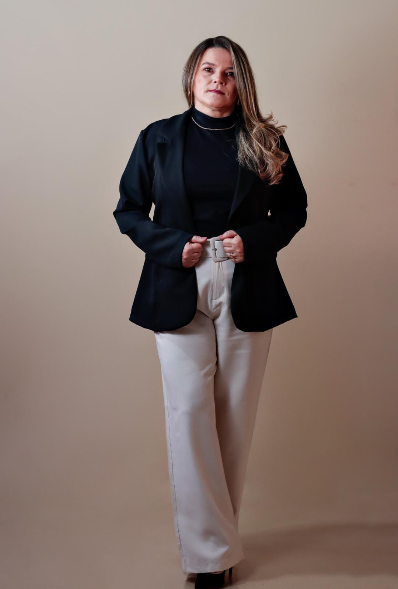
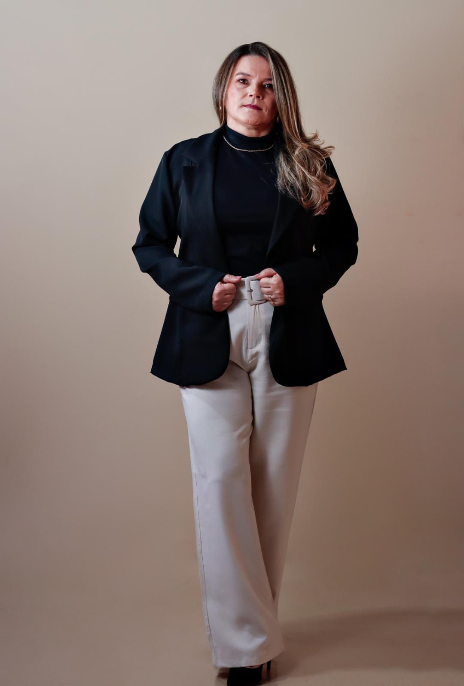
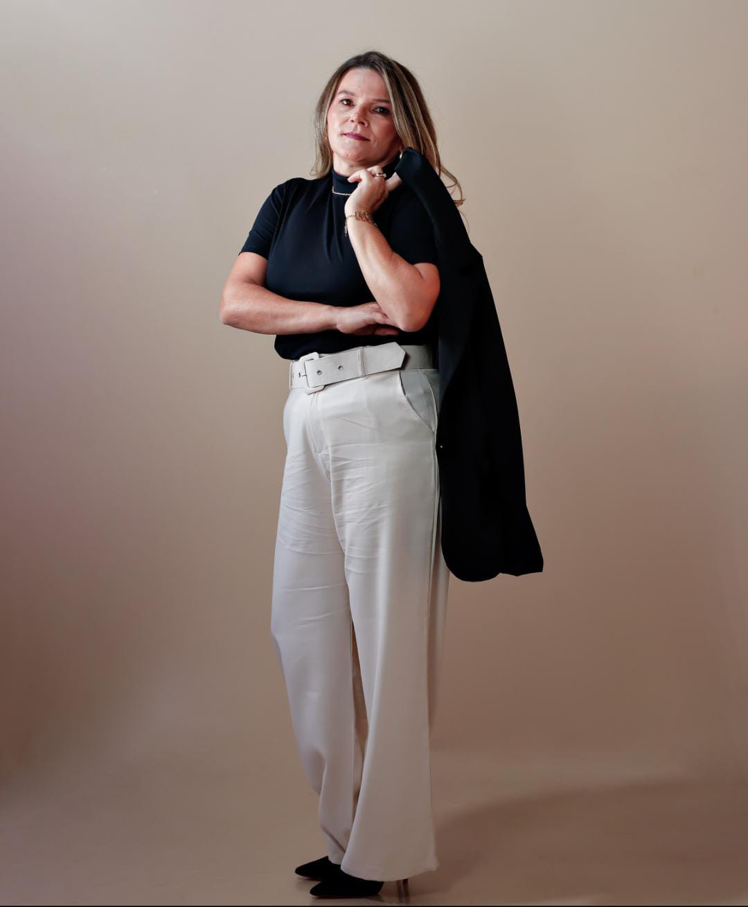
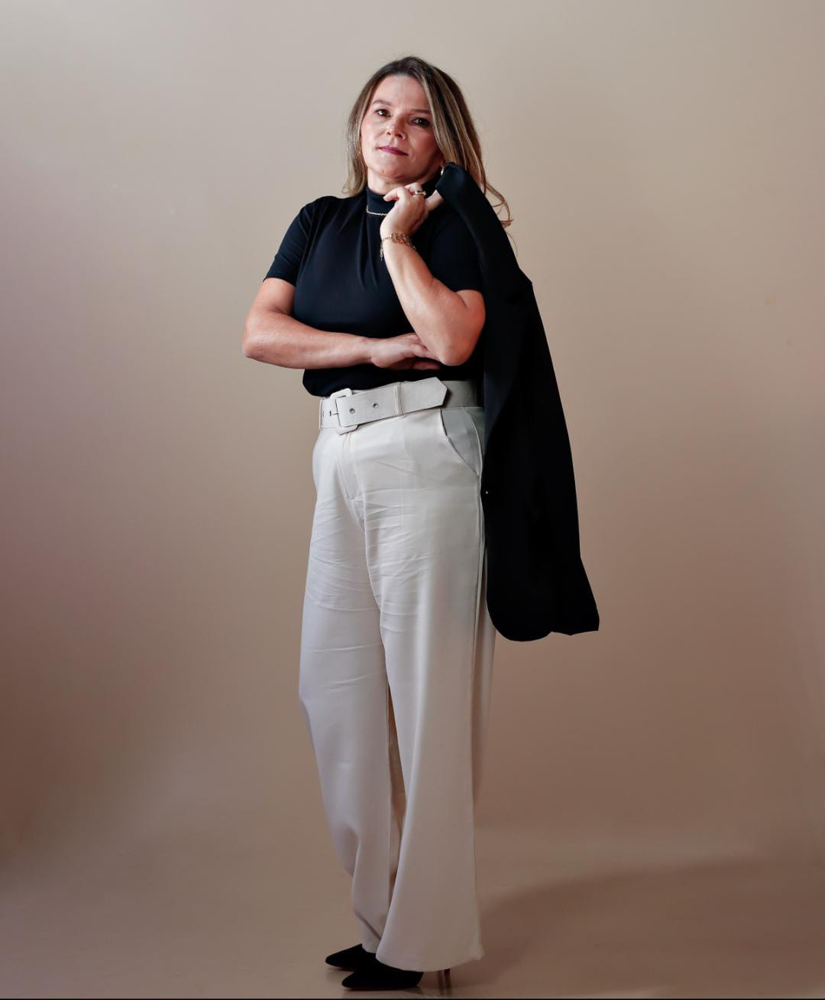

 

Trajetória
Viveu em barraco de madeira sem luz elétrica, banheiro ou água encanada.
com bronquite severa, aos 2 anos foi setenciada á morte pelos médicos "leve a para morrer em casa, ja fizemos de tudo", disseram a Dona Isabel, sua mãe.
Mãe e filha sairam de Itabaiana-SE, deixando tudo para trás em busca da cura em São Paulo.
Aos 10 anos, começou a trabalhar de faxineira para ajudar em casa, dividia o salário com a mãe para as despesas e na criação dos irmãos.
Engravidou na adolecência e largou os estudos, vindo a ser mãe aos 14 e aos 16 sendo mãe de 4 filhos.
Retornou para a escola aos 24 anos e em 2017 se fotmou em Farmácia e Bioquímica como bolsista.
Durante sua carreira criou uma grande paixão pela anatomia humana, oque levou a migrar para a área da beleza.
Hoje, ajuda homens e mulheres a elevar a beleza e a auto-estima através de procedimentos estéticos que entregam resultados naturais.